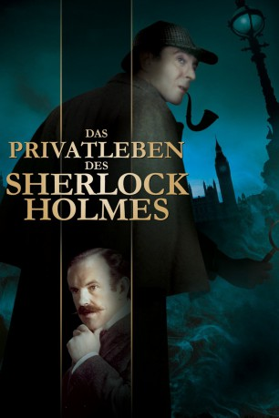
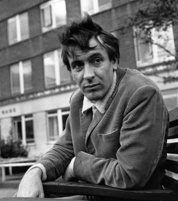
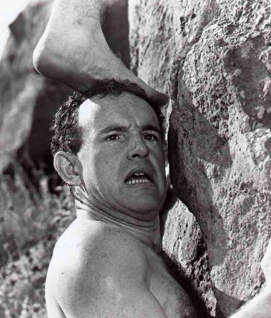
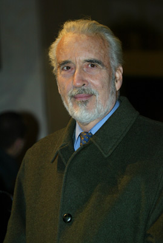
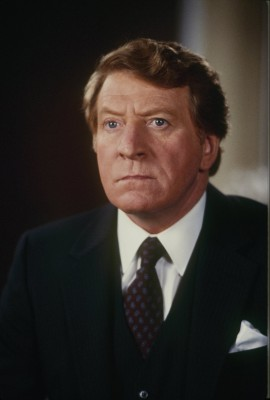
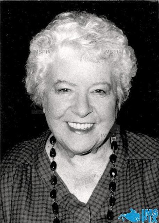
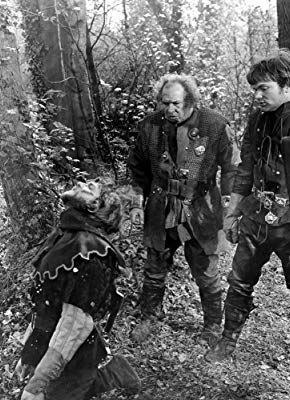

#7513 Das Privatleben des Sherlock Holmes
Alternativ: The Private Life of Sherlock Holmes
 
 IMDB-Wertung: 7.2 / 10
IMDB-Wertung: 7.2 / 10  Metascore: 0
Metascore: 0 
Von einer russischen Ballerina wird Holmes engagiert, ihren verschwundenen Vater zu suchen. Doch seine meist zugekokste Spürnase wittert zu spät, dass er diesmal nicht nur Jäger, sondern auch Gejagter ist. Um den Nachstellungen der nymphomanen Tänzerin zu entgehen, sieht er sich gezwungen, den Schwulen zu mimen. Das Pech bei den Frauen bleibt Holmes auch in einem zweiten Fall treu, als er auf eine hübsche deutsche Spionin hereinfällt.
Jahr: 1970
Dauer: 125 Minuten
FSK: 6
Land: England Studio: MGM Home EntertainmentTonspuren:
Untertitel:
Auflösung: 1080p (1920x824) Größe: 10065 MB
Genre: Thriller, Komödie, Abenteuer, Krimi, Liebe, Mystery
Regisseur:  Billy Wilder
Billy Wilder
Drehbuch: Arthur Conan Doyle
Soundtrack:
Darsteller:
-  Robert Stephens als Sherlock Holmes
-  Colin Blakely als Dr. Watson
- Geneviève Page als Gabrielle Valladon
-  Christopher Lee als Mycroft Holmes
- Tamara Toumanova als Madame Petrova
-  Clive Revill als Rogozhin
-  Irene Handl als Mrs. Hudson
- Stanley Holloway als Gravedigger
- Catherine Lacey als Woman in Wheelchair
- Peter Madden als Von Tirpitz
- John Garrie als First Carter
- Robert Cawdron als Hotel Manager
- Alex McCrindle als Baggageman
 Frank Thornton als Porter
Frank Thornton als Porter- Graham Armitage als Wiggins , uncredited
- Christopher Beeching als Male Dancer trying to seduce Watson , uncredited
- Kenneth Benda als Minister , uncredited
- George Benson als Inspector Lestrade , uncredited
- Anne Blake als Madame , uncredited
- Penny Brahms als Girl , uncredited
- Ina De La Haye als Petrova's Maid , uncredited
- Michael Elwyn als Cassidy , uncredited
- John Gatrell als Equerry , uncredited
- John Scott Martin als Scientist , uncredited
- Miklós Rózsa als Orchestra Conductor , uncredited
- Mollie Maureen als Queen Victoria
-  Michael Balfour als Cabby
- James Copeland als Guide
- Godfrey James als Second Carter
- Paul Hansard als Monk
- Charlie Young Atom als Submarine Crewman , uncredited
- Martin Carroll als Scientist , uncredited
- Eric Francis als Gravedigger #2 , uncredited
- Christopher Gable als Danseur Nobel , uncredited
- Ismed Hassan als Submarine Crewman , uncredited
- Marilyn Head als Girl , uncredited
- Sheena Hunter als Girl , uncredited
- Annette Kerr als Secretary , uncredited
- Teddy Kiss Atom als Submarine Crewman , uncredited
- Wendy Lingham als Girl , uncredited
- Anna Matisse als Girl , uncredited
- Kynaston Reeves als Old Man , uncredited
- Daphne Riggs als Lady-in-Waiting , uncredited
- Phillip Ross als McKellar , uncredited
- Willie Shearer als Submarine Crewman , uncredited
- Judy Spooner als Twin , uncredited
- Tina Spooner als Twin , uncredited
Datei: X:\1970\Privatleben des Sherlock Holmes, Das (1970, FSK6, 1920x824).mkv seit 15.11.2017
Festplatte: HD 1900-1970
 Es gibt insgesamt 24 Filme in der Gruppe '1970'
Es gibt insgesamt 24 Filme in der Gruppe '1970'